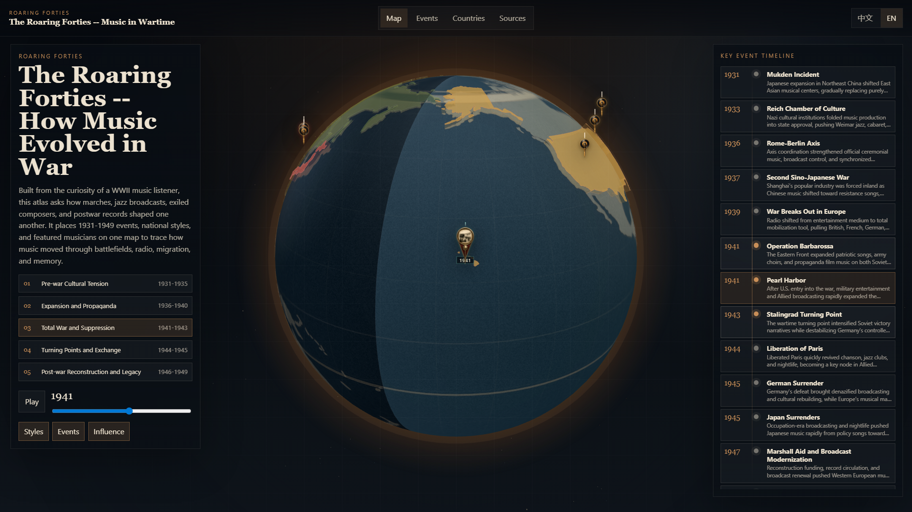
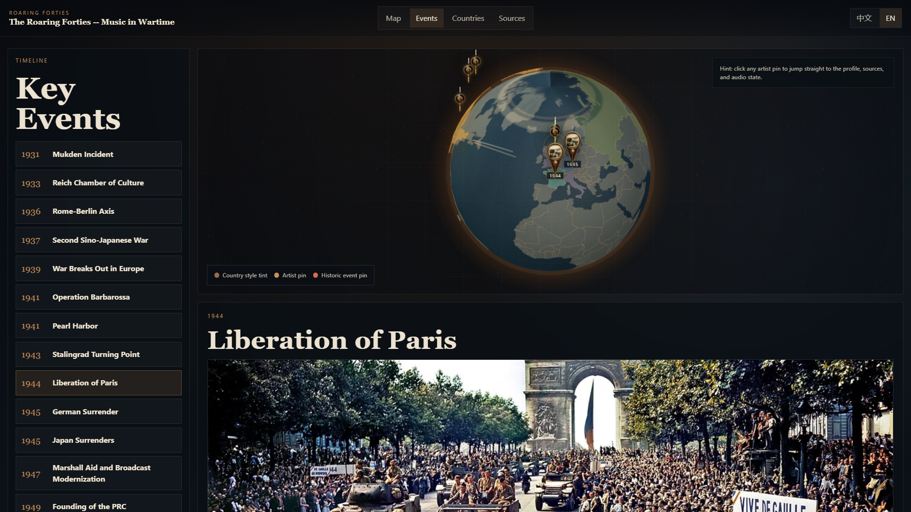
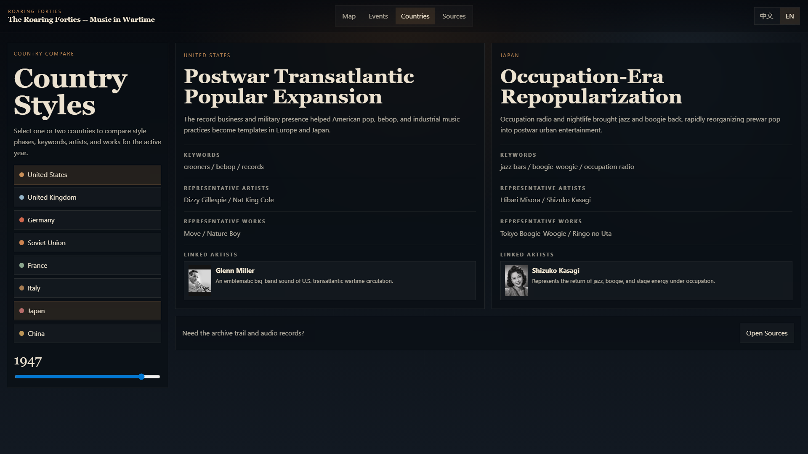
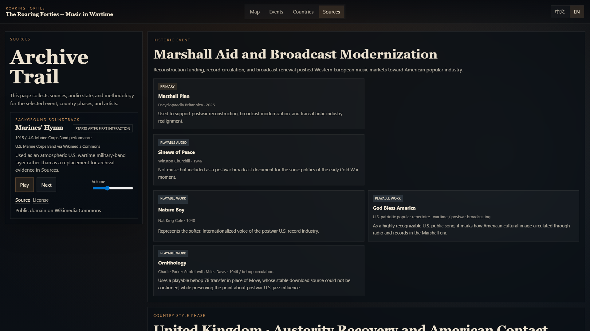

WWII MUSIC ATLAS
咆哮的40年代
The Roaring Forties
How music moved through battlefields, radio, migration, and memory.
1931-1949event timeline
8countries
13key events

Interactive Globe
One map, three evidence layers
From American swing to Allied broadcasts, from Soviet chorus to Chinese mass song.
Story Chapters
Five periods turn data into a listening path
1931
1936
1941
1945
1949
Sound Evidence
Artists appear beside the events that changed their sound
Portraits, representative works, audio clips, and source records stay connected in one reading flow.
Archive Trail
The app keeps context attached to every sound



Source pagesarchive links and methodology
Listening guideswhy each track matters
Rights notesclear reuse boundaries

WWII MUSIC ATLAS
Explore the map. Hear history moving.
咆哮的40年代 -- 音乐如何在战争中演变